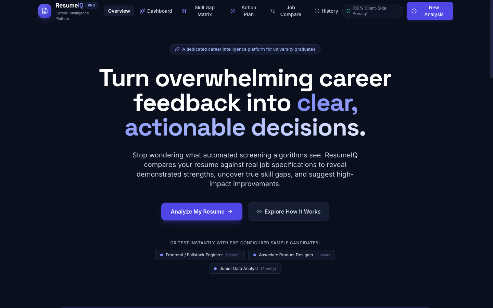

PROJECT 01

ResumeIQ — Career Intelligence Platform
A career intelligence platform that helps job seekers understand resume alignment, identify skill gaps, and discover actionable improvements.
Key Highlights:
- Resume upload & transparent ATS match-score calculation.
- Skill-gap matrix differentiating must-haves from bonus qualifications.
- Actionable before-and-after bullet rewrites with Google XYZ framing.
- Reusable component design system built with WCAG AA compliance.